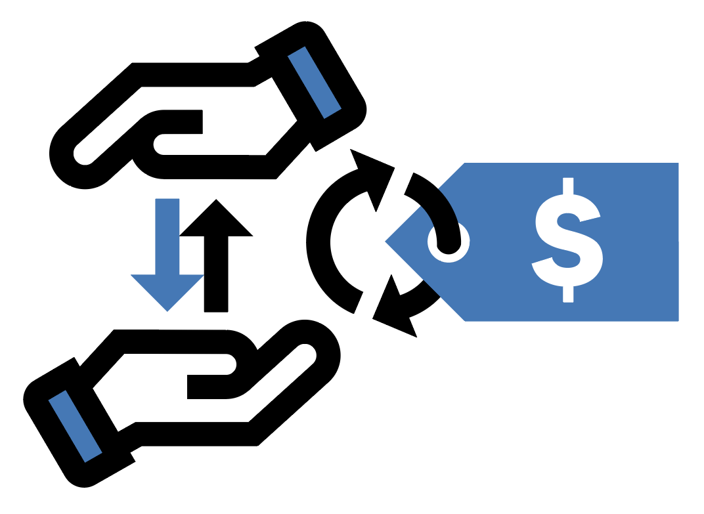

# Load required modules
from sklearn import linear_model
from sklearn.pipeline import Pipeline
from sklearn.compose import ColumnTransformer
from sklearn.preprocessing import OneHotEncoder, StandardScaler, RobustScaler
from sklearn.feature_extraction.text import CountVectorizer
import sklearn.preprocessing
import pandas as pd, numpy as np
from datetime import datetime, date
from matplotlib import pyplot as plt
import seaborn as sns
import doubleml as dml
from sklearn.pipeline import make_pipeline
from sklearn.linear_model import LinearRegression
from sklearn.linear_model import LassoCV
from sklearn.ensemble import RandomForestRegressor
from xgboost import XGBRegressor
import numpy as npPython: Estimation of Price Elasticities with Double/Debiased Machine Learning

In this example, we will demonstrate the use of the DoubleML package in a real-data industry example: Estimation of price elasticity of demand. This notebook is based on a blogpost by Lars Roemheld (Roemheld, 2021) with code and preprocessed data being available from GitHub. The original data file is made available as a public domain (CC0 1.0 Universal) data set and shared on kaggle. It contains data on sales from an online retailer in the period of December 2010 until December 2011.
The data preprocessing is performed in a separate notebook that is available online. To keep the computational effort at a moderate level, we will only use a subset of the data that is used in Roemheld (2021). Our main goal is to illustrate the main steps of elasticity estimation with DoubleML.
The following case study is organized according to the steps of the DoubleML workflow.
0. Problem Formulation: Estimation of Price Elasticity of Demand
“Supply” and “demand” are probably the very first terms that economics and business students hear in their studies. In industry, the price elasticity of demand is a very important quantity: It indicates how much the demand for a product (= the quantity sold by the firm) changes due to a change in its price. As a retailer, this quantity is of great interest because it makes it possible to increase revenues, and eventually profits, by optimally adjusting prices according to elasticities.
The price elasticity of demand is formally defined as the relative change of the demanded quantity (\(q\)) of a product given a percent-change of the price (\(p\))\[\theta_0 = \frac{\partial q/q}{\partial p/p}.\]
In words, the parameter \(\theta_0\) can be interpreted as follows: Provided the price for a product increases by \(1\%\), the demanded quantity changes by \(\theta_0\%\).
In general, it would be possible to estimate \(\theta_0\) based on an experiment or A/B test. However, this is not possible in our case as the data set only contains information on actual purchases in the period of consideration.
The causal problem of price estimation based on an observational study is quite complex: It involves many (simultaneous) decisions made by the customers and the sellers. One approach for estimation of the causal parameter \(\theta_0\) would be to account for confounding variables, that might have an effect to both the price and the quantity sold. The approach taken in Roemheld (2021) is to flexibly account for and construct confounding variables, for example including similarities in their product description or seasonal patterns, and thereby justifying identification of \(\theta_0\).
We can use a partially linear regression (PLR) model for estimation of \(\theta_0\)
\[\log Q = \theta_0 \log P + g_0(X) + \zeta,\]
with \(\mathbb{E}(\zeta|D,X)=0\). The confounders can enter the regression equation nonlinearily via the function \(g_0(X)\). In order to equip \(\theta_0\) (approximately) with the interpretation of a price elasticity, we applied the \(\log()\) to both the demanded quantity (\(Q\)) and the prices (\(P\)), i.e., we set up a \(\log\)-\(\log\)-regression.
Before we proceed with the data analysis, it is important to mention a potential drawback to our analysis: The data only contains information on sales, not on stock days. Hence, based on this data set, it is not possible to assess what happened on days without sales (sales = 0). This drawback must be kept in mind when we draw causal conclusions from this analysis.
1. Data-Backend
To give an idea on the general setting we briefly load an exemplary data excerpt from the original data set. We can see that the data lists the transaction of a (online) retailer selling products like inflatable political globes or fancy pens.
# Load example data set
url = 'https://raw.githubusercontent.com/DoubleML/doubleml-docs/main/doc/examples/data/orig_demand_data_example.csv'
data_example = pd.read_csv(url)
data_exampleIn our analysis, we will use a preprocessed data set. Each row corresponds to the sales of a product at a specific date \(t\).
In the data we have,
Quantity: Quantity demandedrevenue: RevenueUnitPrice: Price per unitmonth: MonthDoM: Day of monthDoW: Day of weekstock_age_days: Number of days product has been sold / observed in the datasku_avg_p: Average (=median) price of the productAustralia, …: Country dummies1,2, … : Numerical variables constructed to capture similarities in product descriptions (n-grams)dLnP: Change in PricedLnQ: Change in Quantity
Note that we do not include product dummies as the price and quantity variables have been demeaned to account for product characteristics.
url2 = 'https://raw.githubusercontent.com/DoubleML/doubleml-docs/main/doc/examples/data/elasticity_subset.csv'
demand_data = pd.read_csv(url2, index_col = 0)
print(demand_data.columns)# Print dimensions of data set
print(demand_data.shape)# Glimpse at first rows of data set
demand_data.head()To initiate the data backend, we create a new DoubleMLData object. During instantiation, we assign the roles of the variables, i.e., dLnQ as the dependent var, dLnP as the treatment variable and the remaining variables as confounders.
feature_names = demand_data.columns.drop(['Quantity', 'revenue', 'UnitPrice',
'dLnQ', 'dLnP']).to_list()# TODO: Initialize the data backend# TODO: Print the data backend2. Causal Model
We already stated that a partially linear regression model in a \(\log\)-\(\log\)-specification will allow us to interpret the regression coefficient \(\theta_0\) as the price elasticity of demand. We restate the main regression as well as the auxiliary regression that is required for orthogonality
\[\begin{aligned}\log Q &= \theta_0 \log P + g_0(X) + \zeta,\\ \log P &= m_0(X) + V\end{aligned},\]
with \(\mathbb{E}(\zeta|D,X)=0\) and \(\mathbb{E}(V|X)=0\). As stated above, we hope to justify the assumption \(\mathbb{E}(\zeta|D,X)=0\) by sufficiently accounting for the confounding variables \(X\).
3. ML Methods
We start with the linear regression model as a benchmark lerner for learning nuisance parameters \(g_0(X)\) and \(m_0(X)\). We additionally set up two models based on a lasso learner as well as a random forest learner and compare our results.
ml_l_lin_reg = LinearRegression()
ml_m_lin_reg = LinearRegression()## TODO: Initialize a lasso learner## TODO: Initialize a random forest learner## TODO: Initialize a gradient boosting learner of your choice4. DML Specifications
For each learner configuration, we initialize a new DoubleMLPLR object. We stick to the default options, i.e., dml_procedure = 'dml2', score = "partialling out", n_folds = 5.
np.random.seed(123)
dml_plr_lin_reg = dml.DoubleMLPLR(data_dml,
ml_l = ml_l_lin_reg,
ml_m = ml_m_lin_reg)# TODO: Initialize the DoubleML models for the other ML methods5. Estimation
To estimate our target parameter \(\theta_0\), we call the fit() method. The results can be summarized by accessing the summary field.
## TODO: Fit and summarize the results from the different modelsLet us now compare how well the three models approximate the nuisance functions \(g_0(X)\) and \(m_0(X)\). We can call the evaluate_learners() method. We can also visualize and compare the results in terms of the predictive performance.
# TODO: Evaluate the predictive performance of the different learners6. Inference
We can visualize and summarize our findings so far. We can conclude that the price elasticity of demand, as indicated by the causal parameter \(\theta_0\), is around \(-1.8\). In all models, the coefficient is significantly different from zero.
## TODO: Summarize the results so far## TODO: Visualization of results8. Sensitivity Analysis
Let’s run the sensitivity analysis with some benchmark scenarios. We focus on the one of the models now. For this, let’s call sensitivity_analysis().
## TODO: Run the sensitivity analysis (with default values)Now, let’s visualize the results. What can we conclude from the contour plot?
## TODO: Generate the contour plot Now, let’s consider a benchmarking scenario. A smiple heuristic could be to use variable importance to gain an impression on important predictors of the outcome and treatment variables. For example, we could use plot_importance for xgboost.
## TODO: Perform some variable importance analysis
# Hint: use dml_plr_boost.models['ml_l']['dLnP'][0][0] to access the learnersLet us run a benchmark analysis for each of the three most important predictors variables for both dLnQ and dLnP to calibrate the sensitivity analysis.
# TODO: Add the benchmarking variables to the sensitivity analysisLet’s summarize the results
## TODO: Summary of benchmarking resultsNow, let’s add the benchmark scenarios to the contour plot.
# TODO: Add benchmarking scenarios to the contour plotHow would you conclude the results from the sensitivity analysis?
Acknowledgement
We would like to thank Lars Roemheld for setting up the blog post on demand estimation using double machine learning as well as for sharing the code and preprocessed data set. We hope that with this notebook, we illustrate how to run such an analysis using DoubleML. Moreover, we would like to thank Anzony Quispe for excellent assistance in creating this notebook.